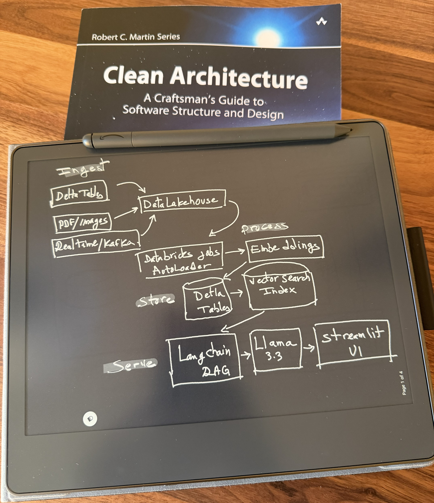
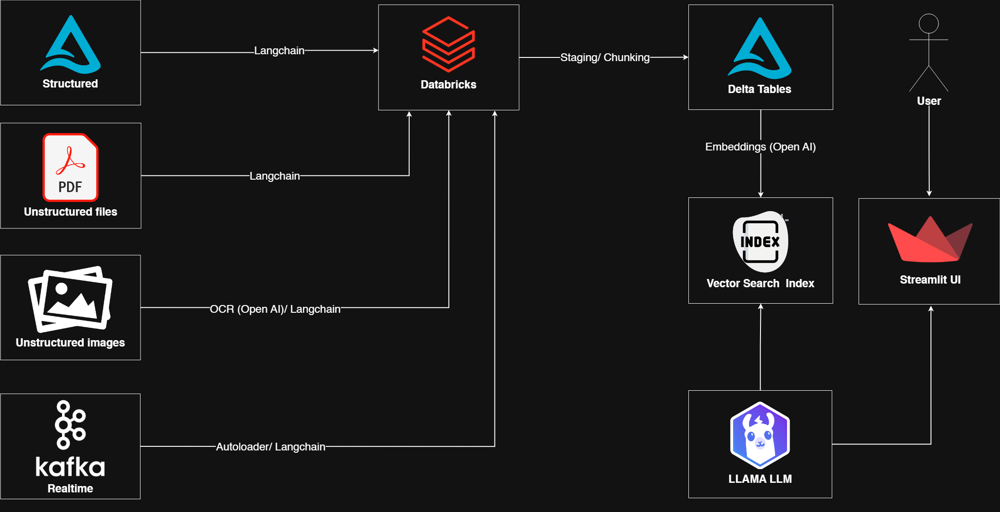
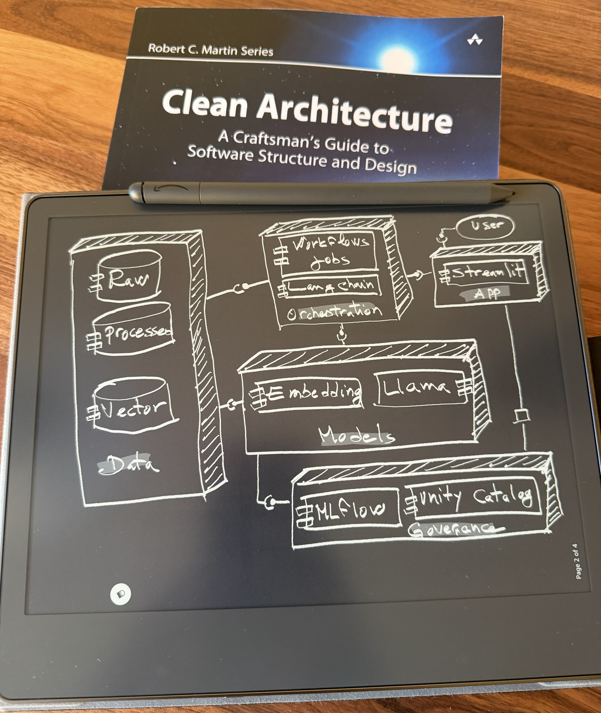
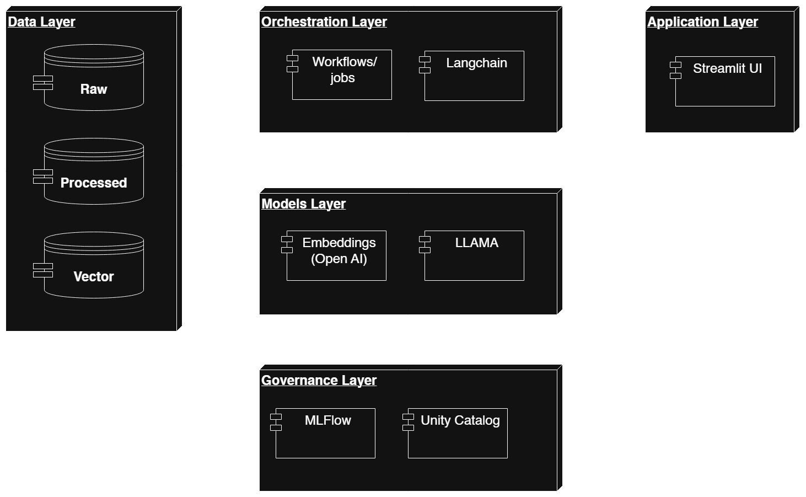
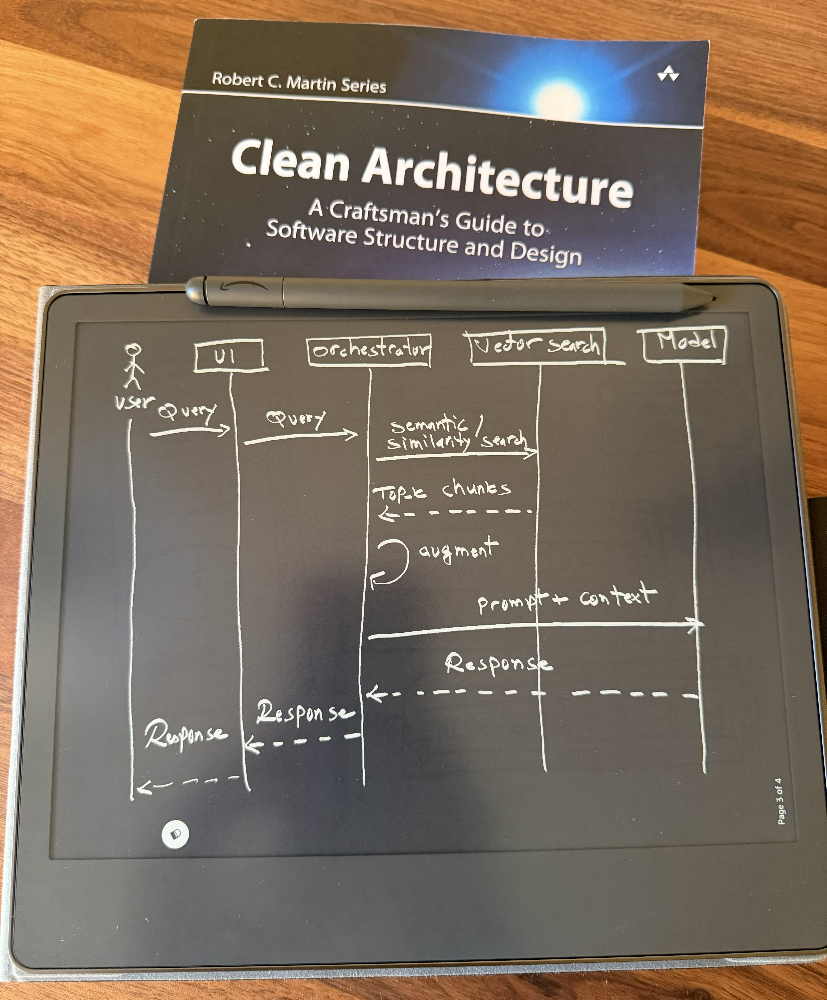
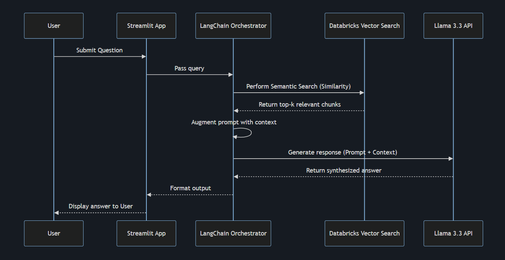

Enterprise RAG Architecture on Databricks
Scalable Knowledge Retrieval from Disparate Data Sources
The Architecture: Unified Knowledge Retrieval
A production-grade RAG system on Databricks that securely connects LLMs to corporate data, processing millions of structured and unstructured documents with sub-second latency.
Video Demonstration
Multi-Modal Ingestion Strategy
Ingests structured (SQL), unstructured (PDFs, Images), and real-time streaming data for a comprehensive, 360-degree enterprise knowledge view.
Serverless Processing with Databricks
Leverages Databricks Workflows, Autoloader, and Delta Lake for automated, scalable ETL and real-time data processing without infrastructure overhead.
Vector DB & Embedding Pipeline
Custom chunking and embedding pipelines transform text into vectors, stored in Databricks Vector Search for highly accurate semantic matching that exceeds traditional keyword search.
Deployable Serving Layer
Serves Meta's LLaMA models via Databricks Apps for technical users and a Streamlit frontend for business stakeholders, offering seamless natural language access.
Orchestration & Governance
Managed by LangChain for orchestration, with built-in governance via Unity Catalog and complete audit trails (model versions, embeddings) via MLflow.
Privacy and Anonymization Notice
Originally deployed for a major financial institution, this demo uses anonymized and public datasets (e.g., DoorDash) to preserve client confidentiality while demonstrating real-world architectural patterns.
The Engineering
Architectural Pattern: Layered Architecture (N-tier)
The system is built on a clean Layered Architecture (N-tier), ensuring separation of concerns:
- Presentation Layer: The Streamlit frontend handles user interactions and displays formatted responses.
- Application Layer: The LangChain orchestrator processes queries, retrieves context, and formulates prompts, while Databricks Jobs handle automated data ingestion workflows.
- Data Access Layer: Databricks Vector Search and Foundation Model APIs provide interfaces to retrieve semantic context and generate text/OCR.
- Data Layer: Delta Tables, Unity Catalog, and MLflow serve as the foundation for raw data storage, processed vectors, and model governance.
This layered design maps to the following operational workflow stages:
- Ingest: Supports structured (Delta), unstructured (PDF/Images), and Real-time data sources.
- Process: Databricks Jobs and AutoLoader handle chunking and embedding
generation.
- Text is split using
RecursiveCharacterTextSplitter. - Images are processed via GPT-4o Vision for text extraction.
- Text is split using
- Store: Data is persisted in Delta Tables and indexed in Databricks Vector Search for low-latency retrieval.
- Serve: The Streamlit frontend interacts with the RAG chain, which retrieves context and generates answers via Llama-3.
- Govern: All data and models are managed through Unity Catalog for enterprise-grade security and lineage.
Functional Requirements
- Query Processing: Accept natural language queries and return accurate, context-aware answers.
- Multi-Format Ingestion: Extract text from SQL databases, PDFs, and images.
- Semantic Search: Retrieve relevant documents based on meaning, not just keywords.
- Source Attribution: Provide citations or links to the original documents for generated answers.
Non-Functional Requirements
- Performance: speed and responsiveness via Databricks Vector Search and semantic retrieval.
- Security: protection against unauthorized access and governance enforced by Unity Catalog.
- Usability: ease of use provided by a natural language interface on Streamlit.
- Reliability: system stability and availability maintained by fault-tolerant Databricks Workflows.
- Scalability: ability to handle growth leveraging Databricks serverless compute and Delta Lake.
- Maintainability: ease of updates and fixes using LangChain orchestration and MLflow tracking.
- Portability: ability to run in different environments due to the modular N-tier architecture.
Architecture Diagram


Component Diagram


Sequence Diagram

